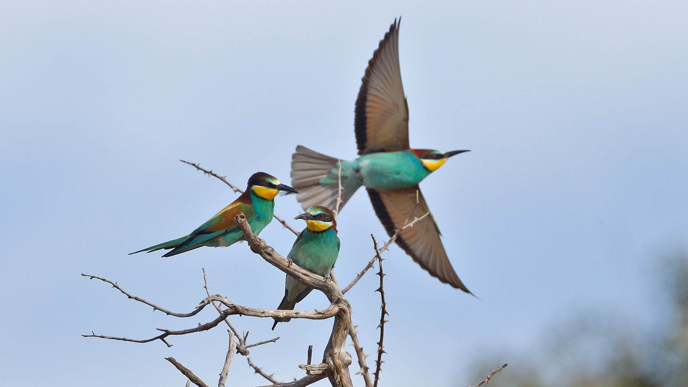

Exclusivité Sayd Magazine | Lecture éditoriale du rapport State of the World's Birds
La migration saisonnière n’est plus seulement le spectacle des vols d’oiseaux qui traversent l’horizon au changement de saison. Elle est devenue un indicateur vital de la santé de la planète et de ses écosystèmes. Dans la dernière édition de son rapport phare, entièrement consacrée aux réseaux de voies migratoires intercontinentales, BirdLife International présente un tableau sombre et complexe des pressions subies par les migrateurs. Ces pressions croissantes redessinent la carte de la biodiversité mondiale.
L’hémorragie en chiffres : 45 % des espèces en déclin continu
Le rapport s’appuie sur une base scientifique évaluant 1 843 espèces d’oiseaux migrateurs dans le monde. Il constate que 45 % d’entre elles enregistrent un déclin continu de leurs effectifs sur leurs différentes routes ; seules 14 % sont en augmentation et 30 % demeurent relativement stables.
Les données indiquent qu’une espèce sur neuf — environ 11 %, soit 200 espèces — est désormais menacée d’extinction à l’échelle mondiale selon la Liste rouge de l’UICN. Les catégories comprennent 32 espèces en danger critique, 57 en danger et 111 vulnérables, auxquelles s’ajoutent des dizaines d’espèces proches du seuil de menace. La crise touche donc de nombreux groupes écologiques.
Les groupes les plus fragiles : oiseaux de rivage et oiseaux marins
Les résultats montrent que les zones humides et les milieux marins subissent les coups les plus durs. Cinquante-quatre pour cent des limicoles migrateurs sont en fort déclin, tandis que les sebkhas sont asséchées et que les côtes et zones de marée, haltes essentielles avant la traversée des déserts et des mers, sont remblayées.
Quarante-neuf pour cent des espèces d’oiseaux marins connaissent une baisse comparable, en raison des captures accidentelles dans les filets et les lignes de pêche au large, de la pollution plastique et de la diminution des stocks de poissons. Même des oiseaux autrefois considérés comme communs pendant la chasse ou la migration, comme la tourterelle des bois et certains canards et foulques, ont subi des déclins successifs entraînant un renforcement des mesures internationales de protection.

Les pièges du parcours : infrastructures et activités humaines
Le rapport souligne que protéger un migrateur dans son seul pays de reproduction ne garantit pas sa survie si ses haltes et ses quartiers d’hiver ne sont pas également sûrs. Les principales menaces se cumulent le long des routes internationales :
- Perte et dégradation des habitats : plus de 58 % des 1 099 zones clés pour la biodiversité (KBA) sont gravement dégradées par l’agriculture intensive, l’industrie et l’assèchement des zones humides.
- Chasse illégale ou non réglementée : longs filets côtiers, appelants électroniques et chasse hors des périodes autorisées persistent, surtout aux points de passage resserrés de la Méditerranée et du Moyen-Orient, où les estimations évoquent des dizaines de millions d’oiseaux prélevés chaque année.
- Énergie et couloirs de vol : parcs éoliens et lignes à haute tension non isolées provoquent des collisions et des électrocutions répétées chez les oiseaux planeurs, notamment aigles, cigognes et faucons.
- Changement climatique et espèces introduites : la disponibilité de nourriture aux sites d’arrivée ne coïncide plus toujours avec le passage des oiseaux ; rongeurs et autres animaux introduits s’attaquent aux nids sur des îles isolées.
Du constat à l’action : une lueur d’espoir et la déclaration de Nairobi
Le rapport ne s’arrête pas aux chiffres alarmants. Il rappelle que la science de la conservation produit des résultats lorsque les efforts internationaux convergent. Le Sommet mondial sur les voies migratoires a adopté la déclaration de Nairobi, par laquelle des gouvernements et des banques de développement internationales, dont la Banque mondiale, se sont engagés à consacrer des milliards de dollars à la protection des réseaux de zones humides et à la restauration de routes sûres.
Le message le plus clair de BirdLife aux communautés, aux amoureux de la nature et aux chasseurs est le suivant : les migrateurs franchissent les frontières politiques sans passeport. Pour les conserver, il faut passer d’une protection locale limitée à une gestion intégrée et durable de l’ensemble de la voie migratoire, afin que leurs vols restent visibles dans notre ciel pour les générations futures.